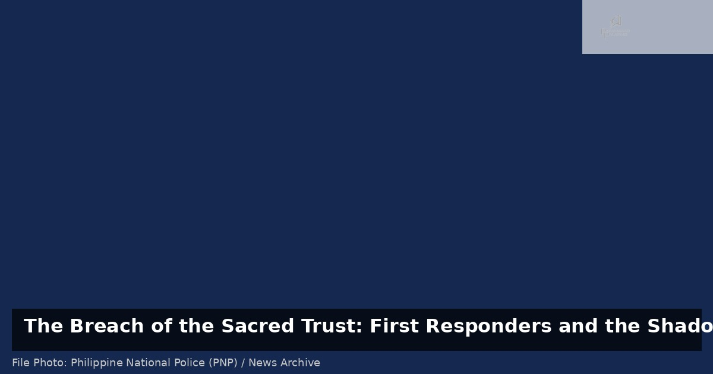

The Breach of the Sacred Trust: First Responders and the Shadow of Illicit Trade

File Photo: Philippine National Police (PNP) / News Archive
The recent arrest of an ambulance driver and a former fireman in Bohol, implicated in an illegal drug operation, serves as a sobering reminder of the vulnerabilities within our public service sectors. While the immediate news focuses on the criminal act, the deeper concern lies in the erosion of the social contract. First responders—paramedics, drivers, and firefighters—occupy a position of profound public trust; they are the individuals we turn to in our moments of greatest vulnerability. When those tasked with preserving life are instead involved in the distribution of narcotics, the integrity of the entire emergency response system is compromised.
This incident highlights a critical need to examine the systemic pressures facing our front-line workers. The grueling nature of emergency services, often characterized by high-stress environments, irregular hours, and, in many regions, stagnant wages, can create a vacuum where substance abuse or involvement in illicit economies takes root. We must move beyond the simplistic narrative of moral failure and recognize the occupational hazards and economic precarity that may drive individuals toward such desperate measures.
Furthermore, this case underscores the necessity for more robust institutional safeguards. Relying solely on reactive policing is insufficient. There is a pressing need for proactive measures, including regular psychological evaluations, comprehensive mental health support programs, and more stringent oversight mechanisms for personnel in high-stakes roles. These are not merely administrative hurdles; they are essential protections for the public and for the workers themselves.
To truly address the issue, the government and local authorities must ensure that those who serve the community are adequately supported, compensated, and monitored. The goal is to create a system where the 'heroes' of our streets are empowered to perform their duties without the temptation of illicit shortcuts. Only by addressing the root causes—be they economic, psychological, or systemic—can we ensure that the hands that save lives remain untainted by the trade that destroys them.